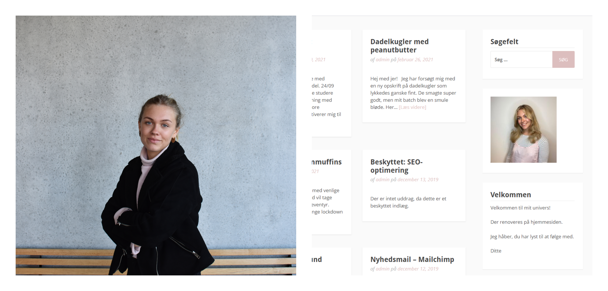

Jeg har erhvervserfaring fra flere brancher. Mange af mine kollegaer på mit nuværende studiejob ville kalde mig et ordensmenneske, der fungerer bedst i en travl hverdag, hvor tempoet og humøret er højt. Jeg går altid på arbejde med et smil og en positiv indstilling over for gæsterne og mine kollegaer.
Erfaringer som kundeservice, ad hoc, salg og service, visuel optimering af hjemmesider i Wordpress.
Jeg er uddannet markedsføringsøkonom med valgfag i digitale medier og markedskommunikation. Som overbygning til denne er jeg startet på PBA i E-handel.